Increasing revenue per account by predicting 12-month CLV, detecting churn risk 8–12 weeks early, and recommending next-best products for 5,000 corporate travel clients — served through a FastAPI inference layer with agentic AI outreach.
A Global Travel Agency manages end-to-end corporate travel programmes for approximately 5,000 business accounts — ranging from SMEs to multinationals. Revenue flows from subscription management fees, per-transaction commissions on flights, hotels, and ground transport, and ancillary service bundles.
The post-pandemic rebound created a paradox: corporate travel volumes were recovering fast, but account churn was accelerating in parallel. Procurement teams were scrutinising every vendor contract, and travel managers were consolidating providers. The agency needed to shift from a reactive service model to a proactive commercial one.
The commercial team had no forward-looking signal: they could not tell which accounts were worth retaining, which were likely to leave, or which services each account was most likely to adopt next — so every intervention was reactive and every cross-sell conversation was a cold call.
Why these models?
| Objective | Chosen model | Why not the alternative |
|---|---|---|
| 12-month revenue prediction (CLV) | LightGBM Regressor | XGBoost was evaluated alongside LightGBM — both are gradient-boosted tree ensembles. LightGBM was selected for its GPU-accelerated training speed, intrinsic null handling (no separate imputation step), and sharper SHAP feature-importance mapping. Final: R²=0.61, MAE=$14.8K on held-out test set. |
| Churn risk scoring | Cox Proportional Hazards | Binary classifiers require a fixed time horizon and discard when-to-churn information. Cox PH gives a hazard curve per account, which is more actionable for CSMs who need lead time. |
| Customer segmentation | UMAP + HDBSCAN | K-Means assumes spherical clusters and requires k upfront. HDBSCAN finds density-based clusters of arbitrary shape and naturally handles noise accounts as outliers. |
| Product recommendation | XGBoost Classifier (per product) | Collaborative filtering requires dense interaction matrices — not available for B2B with sparse purchase history. Separate binary classifiers per product give interpretable feature importances per service. |
Full stack
Pipeline implementation details
POST /predict/clvPOST /predict/churnPOST /predict/cross-sellPOST /generate/outreachGET /accounts/{account_id}GET /segments/summarydim_accounts — COALESCE zero-null hardening on all numeric measuresfact_bookingsfact_ml_churn — integrates support ticket countsfact_ml_cross_sell — unpivots top-2 product recommendations per account
OutreachSignature(dspy.Signature) with 8 ML-derived input fields (CLV score, churn hazard, top cross-sell product, segment, spend data). Uses dspy.ChainOfThought to ground reasoning in predictions before generating email subject + body. max_tokens=2048 via Azure OpenAI GPT-4o.
POST /generate/outreach → Slack alert to account manager./metrics every 15 s via prometheus_fastapi_instrumentator; Grafana dashboard on port 3000 for API drift monitoring.
Model output charts
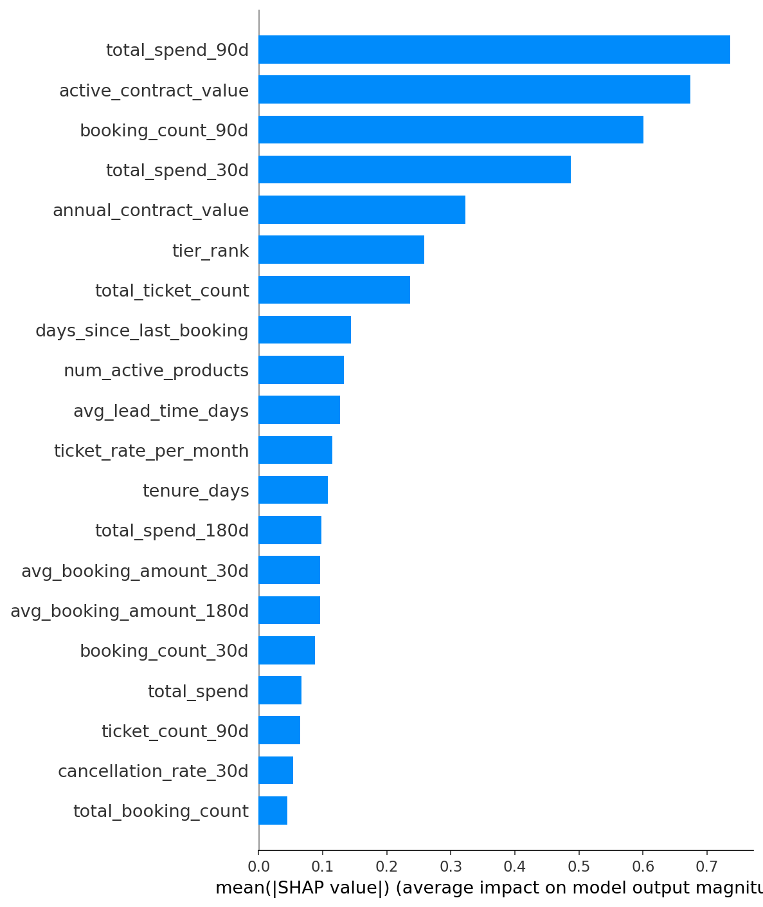
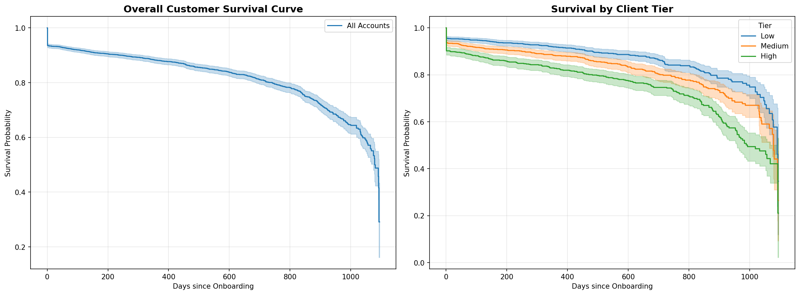
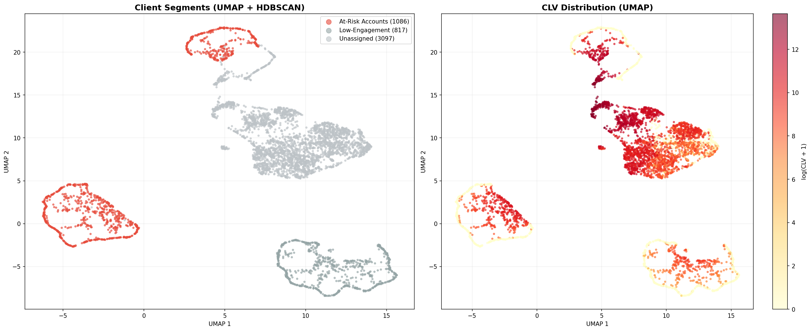
Segment action map
Python + Plotly Streamlit app with four interactive pages — served locally via streamlit run app.py. Account managers can filter by tier, region, and segment in real time.
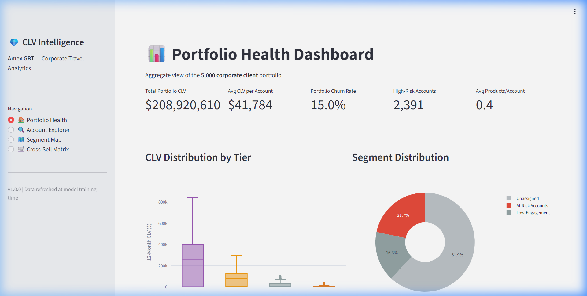
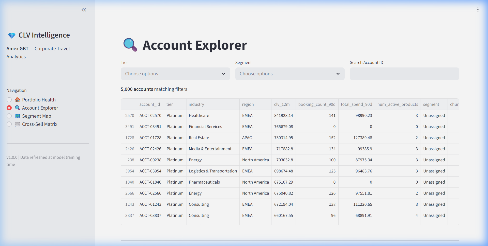
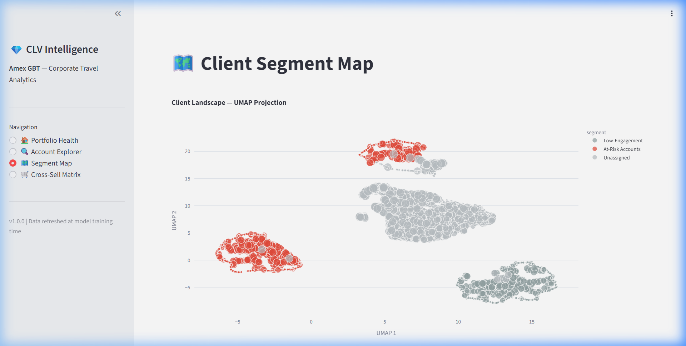
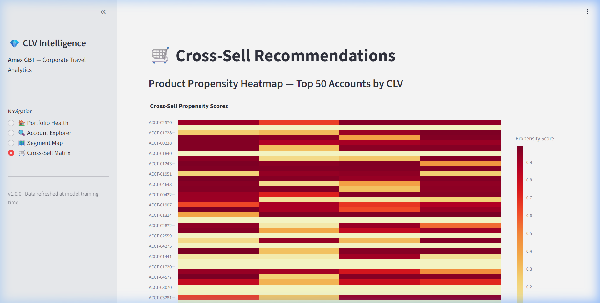
Click any screenshot to enlarge
Four-page Power BI report built on the dbt Gold layer in Snowflake. Designed for the commercial leadership team — landing page routes to the correct hub based on role (operations, sales, compliance).
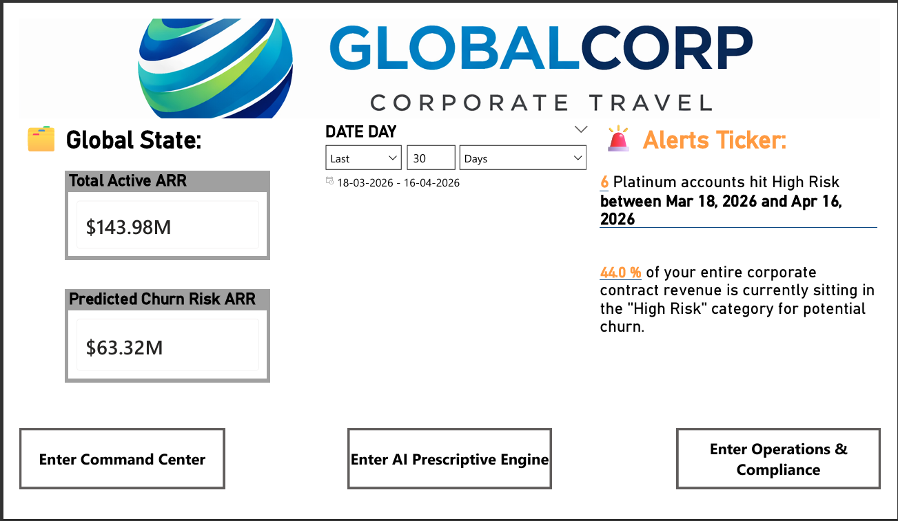
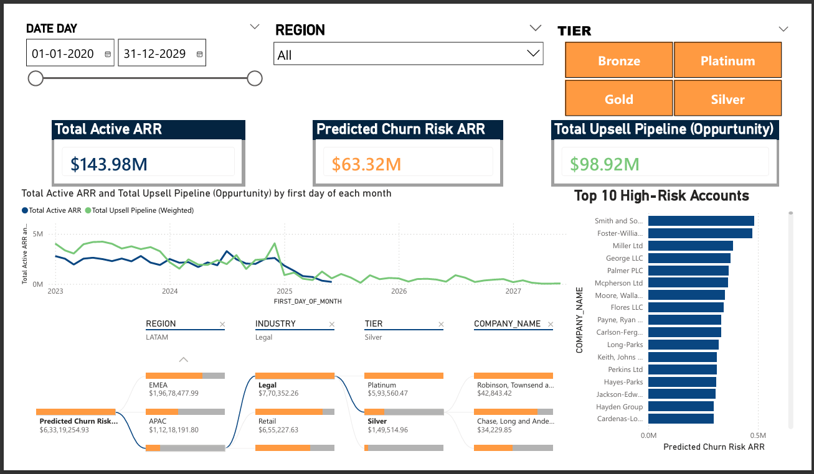
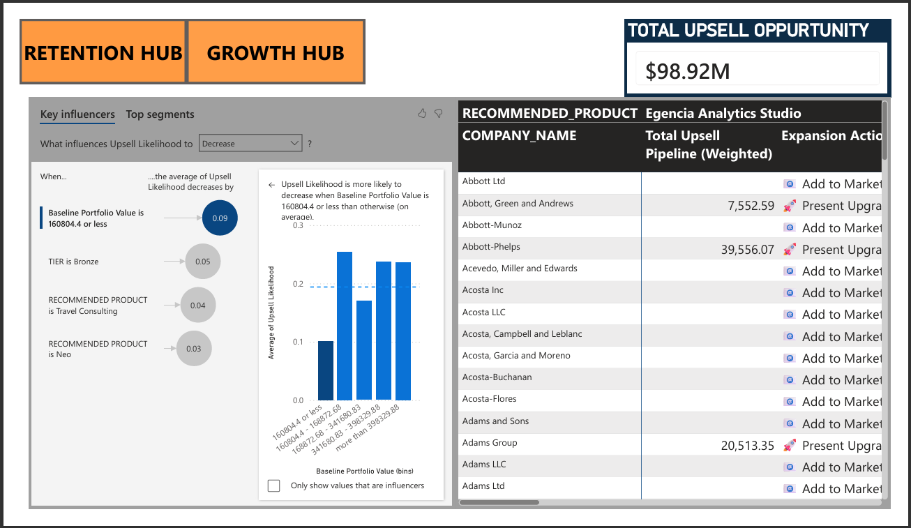
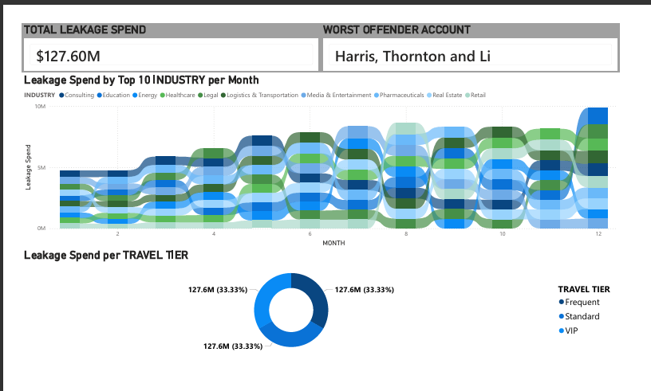
Click any screenshot to enlarge
Note on metrics: This project uses a synthetic dataset modelled on realistic corporate travel patterns. Model performance metrics reflect held-out test set evaluation. Revenue impact projections would require production A/B testing against a live CRM system, which is a planned next step.